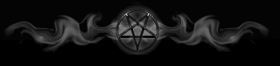

What this meditation does is it puts pressure on your third eye or pineal gland, which will further open and empower whichever one you are focusing on. This meditation is advanced and not for beginners. You should have enough experience to where you fully understand the directions below with no problem.
1. Breathe in energy from the base of your spine up to your throat chakra.
2. Hold as long as comfortable and focus on either your third eye or pineal gland. You should feel a pressure, ache, or even slight pain.
3. Exhale and repeat for a number of times.
Before you begin this meditation or any other for that matter, you should plan ahead what your meditation will consist of. In this case, whether you will focus on your pineal gland or third eye. I have done both in that I began the meditation focusing on my third eye and then on my pineal gland for the second half.
Eventually, when you fully open and activate your pineal gland, your head will be full of light. This is extremely powerful and very pleasurable. This light is very powerful for manifesting your desires when properly directed.
The sensation from the pineal gland when it is activated is incredible and beyond words. It is exceptionally pleasurable and lasts for hours when one is still and intuned.

BACK TO SATANIC POWER MEDITATION MAIN PAGE
© Copyright 2007, Joy of Satan Ministries;
Library of Congress Number: 12-16457